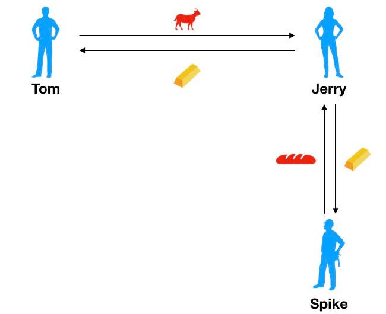
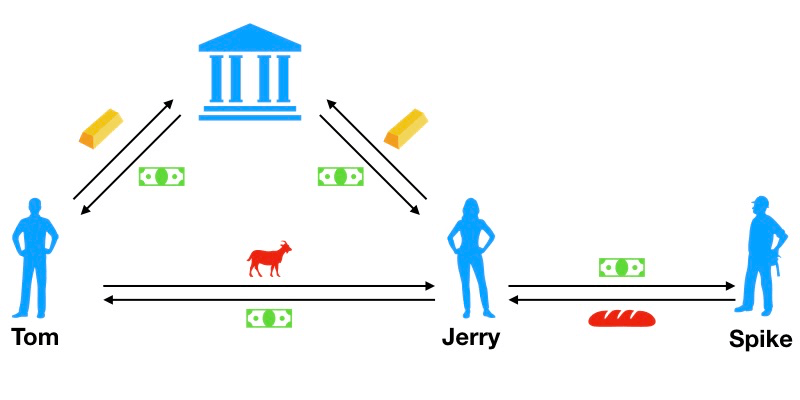
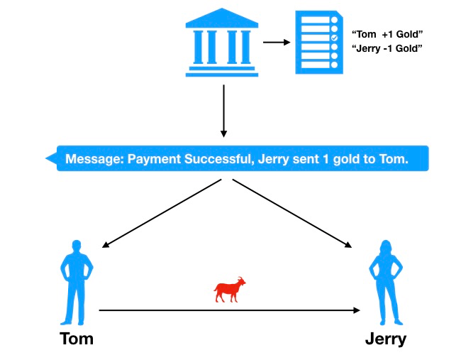

Bitcoin and Blockchain
"At this moment, just like in 2000, software development into the Internet age, programmers either continue learning or or be weeded out. Now the Internet age is over, welcome to the age of AI and blockchain."
What we are going to talk about?
- Evolution of Currency
- What is Bitcoin
- History of Bitcoin
- Transactions
- Blockchain
- Mining and Consensus
- User Security Best Practices
What we are not going to talk about?
- Alternative Coins
- Ethereum
- Elliptic Curves Cryptography
- Digital Signatures (ECDSA)
Evolution of Currency
Barter Economy

Material Currency
Token Money
Cashless Society
What is Bitcoin?
Bitcoin consists of:
- A decentralized P2P network (the bitcoin protocol)
- A public transaction ledger (the blockchain)
- A set of rules for independent transaction validation and currency issuance (consensus rules)
- A mechanism for reaching global decentralized consensus on the valid blockchain (Proof-of-Work algorithm)
History of Bitcoin
- Bitcoin was invented in 2008 with the publication of a paper titled "Bitcoin: A Peer-to-Peer Electronic Cash System" written under the alias of Satoshi Nakamoto
History of Bitcoin
- The bitcoin network started in 2009, based on a reference implementation published by Nakamoto and since revised by many other programmers
History of Bitcoin
- Satoshi Nakamoto withdrew from the public in April 2011, leaving the responsibility of developing the code and network to a thriving group of volunteers
2013 - 2018

Bitcoin Transaction
Keys, Addresses, and Wallets
- Ownership of bitcoin is established through digital keys, bitcoin addresses, and digital signatures
- The digital keys created and stored by users in a file, or simple database, called a wallet

Transaction Inputs and Outputs

A chain of transactions
Common Transaction Forms
The block explorer application
UTXO
- Unspent Transaction Outputs 未消费交易输出
- 最小单位是 Satoshi (0.00000001 BTC)
- 交易输入是被消耗的 UTXO，输出是产生的新 UTXO
- 比特币世界没有记录用户的余额，只有分散在若干交易中的 UTXO，比特币钱包通过扫描区块链聚合属于用户的所有 UTXO 来计算余额
Transaction Fees
Fees = Sum(Inputs) – Sum(Outputs)
- 按照交易尺寸，以千字节计算得来，与交易额无关
- 是矿工处理交易的优先级因素之一
- 钱包会根据网络中最近交易自动计算恰当的交易费
交易费估算

锁定和解锁脚本
- 比特币客户端使用一种基于堆栈的，非图灵完备的脚本语言来验证交易
- 交易验证依赖于两类脚本: 锁定和解锁脚本
一次 P2PKH 交易的脚本验证过程
比特币网络中的大多数都是 P2PKH (Pay-to-Public-Key-Hash) 交易


Blockchain
Block and Blockchain
- 区块是一种聚合了交易信息的容器数据结构
- 每个区块都会指向一个父区块，形成一个有序链表
- 区块链就是比特币世界中的公共账簿
区块结构
| Size | Field | Description |
|---|---|---|
| 4 bytes | Block Size | The size of the block, in bytes, following this field |
| 80 bytes | Block Header | Several fields form the block header |
| VarInt | Transaction Counter | How many transactions follow |
| Variable | Transactions | The transactions recorded in this block |
区块头
| Size | Field | Description |
|---|---|---|
| 4 bytes | Version | A version number to track software/protocol upgrades |
| 32 bytes | Previous Block Hash | A reference to the hash of the previous block in the chain |
| 32 bytes | Merkle Root | A hash of the root of the merkle tree of this block’s transactions |
| 4 bytes | Timestamp | The approximate creation time of this block |
| 4 bytes | Difficulty | The Proof-of-Work algorithm difficulty target for this block |
| 4 bytes | Nonce | A counter used for the Proof-of-Work algorithm |
区块的连接

创世区块
区块链中的第一个区块创建于 2009 年，称为创世区块。创世区块中包含了一个彩蛋，在其 Coinbase 交易中包含这样一句话：“首相第二次对处于崩溃边缘的银行进行紧急救助”，这是当天泰晤士报的头版，也是对现有货币制度的嘲讽
Merkle Tree
Merkle Tree
Even number of nodes

Merkle Path

Merkle Tree 效率
| Number of Txs | Approx. size of block | Path size (hashes) | Path size (bytes) |
|---|---|---|---|
| 16 txs | 4 KB | 4 hashes | 128 bytes |
| 512 txs | 128 KB | 9 hashes | 288 bytes |
| 2048 txs | 512 KB | 11 hashes | 352 bytes |
| 65535 txs | 16 MB | 16 hashes | 512 bytes |
Mining and Consensus
矿工干什么，收入来自哪里？
矿工验证收到的每笔新交易，并将它们构建在区块中。每成功构建一个新区块并添加到区块链中，矿工将获得创建区块的奖励和区块中所有交易的交易费
比特币经济学与货币创造
比特币网络约每 10 分钟产生一个新区块，每个新区块的诞生会创造一定额度的新比特币（矿工奖励），这是比特币的唯一的发行方式
比特币发行速度和总量
每 210,000 个块（约 4 年），发行速率降低 50%，初始每个区块会产生 50 BTC，而现在 (2017) 已降低到 12.5 BTC。到 2140 年左右，比特币总量将达到 2,100 万，之后新区块将不再奖励比特币，货币发行停止，届时矿工收益仅来自交易费

Coinbase 交易
- 每个区块中的第一笔交易是 Coinbase（创币）交易
- Coinbase 交易没有输入，而输出是当前区块奖励加所有交易费的总和，支付给构建此区块的矿工自己
Proof of Work
让我们回忆下区块头中的 Difficulty Target 和 Nonce
| Size | Field | Description |
|---|---|---|
| 4 bytes | Difficulty | The Proof-of-Work algorithm difficulty target for this block |
| 4 bytes | Nonce | A counter used for the Proof-of-Work algorithm |
Proof of Work
# example of proof-of-work algorithm
max_nonce = 2 ** 32 # 4 billion
def proof_of_work(header, difficulty_bits):
difficulty_target = 2 ** (256-difficulty_bits)
for nonce in xrange(max_nonce):
block_hash = hashlib.sha256(str(header)+str(nonce)).hexdigest()
if long(block_hash, 16) < difficulty_target:
print "Success with nonce %d" % nonce
return (block_hash, nonce)
要成功构建一个区块，矿工必须穷举出一个合适的 Nonce，使区块头的哈希值小余难度目标
难度目标与难度调整
- 每 10 分钟产生一个新区块，这是比特币的发行速率和交易达成速度的保证，需要在长期内保持恒定
- 每个矿工节点将独立完成难度调整，公式如下
New Difficulty = Old Difficulty *
(Actual Time of Last 2016 Blocks / 20160 minutes)
总哈希算力
难度目标

矿工间的竞争
当一位矿工成功构建出区块（解出 Nonce），传播给其它节点时，其它矿工会立刻停止计算，转而投入下一个区块构建的竞争中，一轮竞争的结束也代表着下一轮竞争的开始
去中心化共识
共识来自独立发生在每个网络节点的 4 种过程相互影响
- 每个节点依据综合的标准列表对每个交易进行独立验证
- 每个节点独立将交易记录打包进新区块，并通过工作量证明算法进行验算
- 每个节点独立的对新区块进行校验并组装进区块链
- 每个节点对区块链独立选择，在工作量证明机制下选择累计工作量最大的链
区块链分叉
由于区块链是去中心化的，每个节点的视角不是总保持一致，两个节点可能同时传播了经过工作量证明的新区块，试图去延长区块链

只要所有节点遵循选择最长累计难度链的原则，整个网络最终会收敛到一致的状态
Hard Fork
协议、方案的升级，守旧派和革新派
51% Consensus Attacks
If we controlled a majority (51%) of the total network’s hashing power, we can ...
- Cause deliberate "forks" in the blockchain and double-spend transactions
- Execute DoS attacks against specific transactions or addresses
Is It Too Late to Start Mining?
GPU Miner

Nvidia GTX1080 GPU = 2.83GH/s for 200w
ASIC: Application-Specific Integrated Circuit

AntMiner S2 ASIC = 1000GH/s for 120w
Return On Investment
ROI = Miner costs / (Income per day - Power costs)
Your competitors: Inside a secret Chinese bitcoin mine
In this highly competitive environment, miners collaborate to form mining pools
User Security Best Practices
- Physical Bitcoin Storage
- Hardware Wallets
- Balancing Risk
- Diversifying Risk
- Multisig and Governance
- Survivability